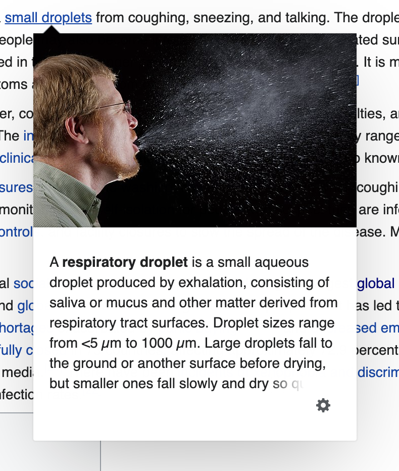
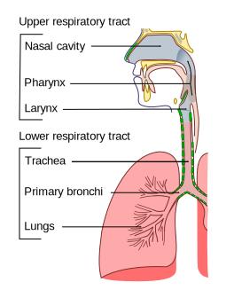

With the recent release of Crusader Kings 3 by Paradox Interactive, a new UI paradigm in the game stopped me in my tracks. There are a lot of lessons that web designers can learn from video game user interface design and while they aren’t always transferrable, they are worth exploring. In this case it’s the idea of having tooltips within tooltips.
Tooltips have become a standard element within user interface design. The majority of web UI frameworks include some form of tooltip, with Bootstrap having two types (Tooltips and Popovers). Even Wikipedia has embraced the tooltip when hovering over links:
When Wikipedia first released this tooltip I was kind of against the idea of it. If I want to click a link, I’ll click a link. Why show me a tiny amount of information? But over time, I find myself getting a lot of value out of the snapshot of information contained in the tooltip. I also didn’t like how “rich” the tooltips were, with images and interactivity. How my tune has changed!
Here’s an interactive example:

A respiratory droplet is a small aqueous droplet produced by exhalation, consisting of saliva Saliva (commonly referred to as spit) is an extracellular fluid produced and secreted by salivary glands in the mouth. In humans, saliva is 99.5% water plus electrolytes, mucus, white blood cells, epithelial cells (from which DNA can be extracted), enzymes (such as amylase and lipase), antimicrobial agents such as secretory IgA, and lysozymes. or mucus and other matter derived from respiratory tract The respiratory tract is the subdivision of the respiratory system involved with the process of respiration in mammals. The respiratory tract is lined with respiratory mucosa or respiratory epithelium.  surfaces. Droplet sizes range from <5 µm to 1000 µm. Large droplets fall to the ground or another surface before drying, but smaller ones fall slowly and dry so quickly...
Did you find it intuitive?
Bear in mind this is a quick HTML/CSS example that I put together in 5 mins, so it’s rough around the edges.
Something I found intuitive was when you hover on the first tooltip, you don’t move your cursor. Then when you find a piece of information you want to learn more about, you’ll hover over that. It might overlap the first tooltip, but that’s fine. You’ve chosen to seek more information.
If you, like me, are designing a product that has a blend of simple and complex ideas, nested tooltips could be just the ticket. At Maths Pathway, high school teachers are one of the main personas. While they understand what a Test is, they might not know what our rules are about generating a test for their class. So a tooltip can be a great way to provide that small tidbit of information. Within that tooltip, we might refer to the idea of regeneration. Why not give the teacher a quick explanation? The assumption is that they just read about generation, so they are primed. An example of this could be:
EXAMPLE
It seems highly logical to have this “knowledge web” built into nested tooltips. Granted, a game like Crusader Kings 3 is highly complex, with many interrelated concepts. There are likely hundreds of different tooltips in Crusader Kings 3, so it makes sense for Paradox to focus on having a great system to explain many new concepts to players. But lots of web products have complexity too.
Potential issues
- Accessibility. Well anything is possible with javascript right? You could possible tab through them to get them working.
- User experience. It can be frustrating to move your cursor 1 pixel outside of the bounds of the element which removes the tooltip.
- How deep do you go? The design should have discretion, an infinitely deep tooltip chain wouldn’t make sense. There might be some sweet number here like, 2 or 3 nested tooltips.
- Touch devices? You could just treat them as tappable elements.